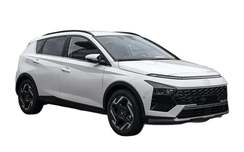
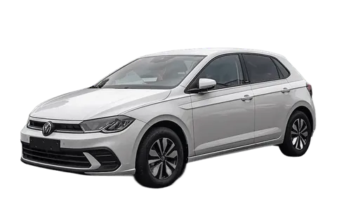
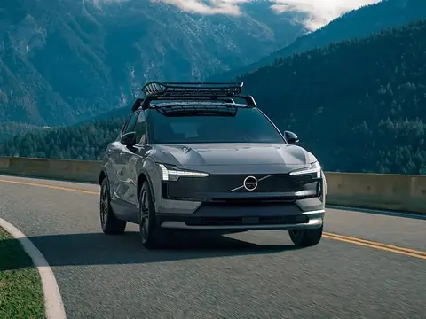

Vi räknar på alla 2 507 erbjudanden varje dag och tar fram de bästa – efter vad du faktiskt betalar inte annonspriset.
Räknat på vad du betalar per mil – med insats och alla avgifter – är Hyundai Bayon bäst just nu: 11 13 kr/mil (2 783 kr/mån för 3,000 mil/år hos Hedin Automotive Segeltorp). Lägst månadskostnad har Volkswagen Polo för 1 995 kr/mån. Kontrollerat 18 nov 2026.

Lägst kostnad per milHyundai Bayon11,13 kr/mil2 783 kr/mån, Hedin Automotive Segeltorp
Lägst månadskostnadVolkswagen Polo1 995 kr/mån1000 mil/år, Din Bil / Volkswagen Kista
Mest bil för pengarnaVolvo EX30 Cross Country27 % av nyprisetbetalar du på 36 månader, Volvo Car KungsängenAllt du betalar på 36 månader (hyra, insats och avgifter) delat med hur många mil som ingår. Bäst om du vill ha mycket bil för pengarna och kör en del.
| # | Bil och säljare | Kr per mil |
|---|---|---|
| 1 | Hyundai BayonHedin Automotive Segeltorp, 3 000 mil/år | 11,13 kr |
| 2 | Hyundai i20Hedin Automotive Segeltorp, 3 000 mil/år | 11,93 kr |
| 3 | MG 4 EV UrbanHedin Automotive Kista, 3 000 mil/år | 11,98 kr |
| 4 | Honda HR-VHedin Automotive Kista, 3 000 mil/år | 12,33 kr |
| 5 | Kia PicantoHedin Automotive Trelleborg, 3 000 mil/år | 12,93 kr |
Faktisk kostnad per månad med insats och avgifter utslagna på 36 månader. Bäst om du kör kort och vill ha en så låg månadskostnad som möjligt.
| # | Bil och säljare | Per månad |
|---|---|---|
| 1 | Volkswagen PoloDin Bil / Volkswagen Kista, 1 000 mil/år | 1 995 kr |
| 2 | Dacia SanderoHedin Automotive Västerås, 1 000 mil/år | 2 077 kr |
| 3 | Seat AronaCUPRA Haninge Bilia, 1 000 mil/år | 2 295 kr |
| 4 | Skoda KamiqDin Bil / Skoda Sätra, 1 500 mil/år | 2 395 kr |
| 5 | Peugeot 2008J BIL Kristianstad, 1 000 mil/år | 2 399 kr |
Hur stor del av bilens nypris du betalar under 36 månader. Lägre andel betyder att du får en dyrare bil för pengarna.
| # | Bil och säljare | Andel av nypris |
|---|---|---|
| 1 | Volvo EX30 Cross CountryVolvo Car Kungsängen, 1 000 mil/år | 27 % |
| 2 | Cupra TerramarCupra, 1 000 mil/år | 27 % |
| 3 | Cupra FormentorCupra, 1 000 mil/år | 27 % |
| 4 | Audi A3 SportbackDin Bil, 1 000 mil/år | 28 % |
| 5 | Volvo EX40Volvo Car Kista, 1 000 mil/år | 29 % |
| # | Bil och säljare | Kr per mil |
|---|---|---|
| 1 | MG 4 EV UrbanHedin Automotive Kista, 3 000 mil/år | 11,98 kr |
| 2 | Renault 5 E-TechHedin Automotive Segeltorp, 3 000 mil/år | 14,31 kr |
| 3 | Hyundai IONIQ 3Hedin Automotive Segeltorp, 3 000 mil/år | 14,33 kr |
| 4 | Nissan LeafHedin Automotive Halmstad, 3 000 mil/år | 16,33 kr |
| 5 | MG S5Hedin Automotive Segeltorp, 3 000 mil/år | 17,18 kr |
| # | Bil och säljare | Kr per mil |
|---|---|---|
| 1 | Hyundai BayonHedin Automotive Segeltorp, 3 000 mil/år | 11,13 kr |
| 2 | Honda HR-VHedin Automotive Kista, 3 000 mil/år | 12,33 kr |
| 3 | Nissan JukeHedin Automotive Halmstad, 3 000 mil/år | 13,53 kr |
| 4 | Nissan QashqaiHedin Automotive Mölndal, 3 000 mil/år | 13,89 kr |
| 5 | Hyundai TucsonHedin Automotive Segeltorp, 3 000 mil/år | 14,33 kr |
| # | Bil och säljare | Kr per mil |
|---|---|---|
| 1 | Toyota CorollaEuropeiska Motor - Rissne, 1 500 mil/år | 27,16 kr |
| 2 | Toyota Corolla Touring SportsBilia Lund - Toyota, 1 500 mil/år | 27,16 kr |
| 3 | Skoda OctaviaBilia Haninge Skoda, 1 000 mil/år | 32,76 kr |
| 4 | Skoda Octavia CombiŠkoda, 1 000 mil/år | 35,51 kr |
| 5 | Subaru ForesterRA Motor AB - Uppsala Nya bilar, 1 500 mil/år | 35,96 kr |
| # | Bil och säljare | Kr per mil |
|---|---|---|
| 1 | Hyundai i20Hedin Automotive Segeltorp, 3 000 mil/år | 11,93 kr |
| 2 | Kia PicantoHedin Automotive Trelleborg, 3 000 mil/år | 12,93 kr |
| 3 | Renault 5 E-TechHedin Automotive Segeltorp, 3 000 mil/år | 14,31 kr |
| 4 | Volkswagen PoloDin Bil / Volkswagen Kista, 1 000 mil/år | 23,94 kr |
| 5 | Toyota Aygo XBilia Haninge - Toyota, 1 500 mil/år | 23,96 kr |
| # | Bil och säljare | Kr per mil |
|---|---|---|
| 1 | Hyundai TucsonHedin Automotive Segeltorp, 3 000 mil/år | 15,13 kr |
| 2 | Ford KugaHedin Automotive Karlshamn, 3 000 mil/år | 19,53 kr |
| 3 | BYD Seal 6 TouringHedin Automotive Kista, 3 000 mil/år | 20,78 kr |
| 4 | Hyundai Santa FeHedin Automotive Segeltorp, 3 000 mil/år | 25,09 kr |
| 5 | Peugeot 2008Dala Bilgalleri AB, 1 000 mil/år | 33,59 kr |
Räknat på kostnad per mil med insats och alla avgifter är Hyundai Bayon bäst just nu, 11,13 kr/mil hos Hedin Automotive Segeltorp. Lägst månadskostnad har Volkswagen Polo, 1 995 kr/mån. Listorna räknas om varje dag.
Räkna på hela kostnaden: lägg ihop alla månadshyror, insatsen och avgifterna och dela med hur många mil du får köra. Då kan du jämföra erbjudanden med olika körsträcka och insats. Kolla också vad som ingår, till exempel service och vinterhjul.
Ett lågt månadspris kan ha en hög insats, avgifter eller en kort körsträcka. Därför visar vi både lägsta faktiska månadskostnad och lägsta kostnad per mil.
Nej. Ordningen bestäms bara av siffrorna. Eventuella annonslänkar är alltid märkta och påverkar inte placeringen.
Källa: Konsumentverkets och M Sveriges råd om privatleasing. Hela checklistan →